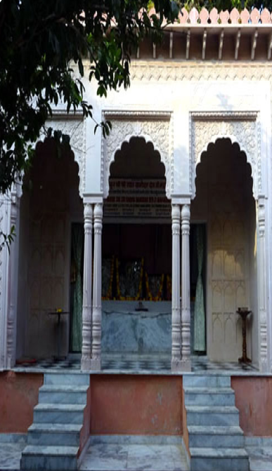
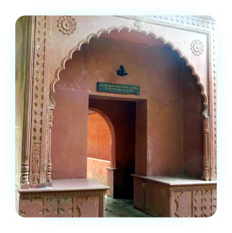
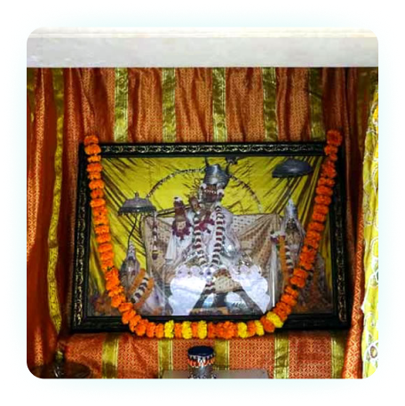
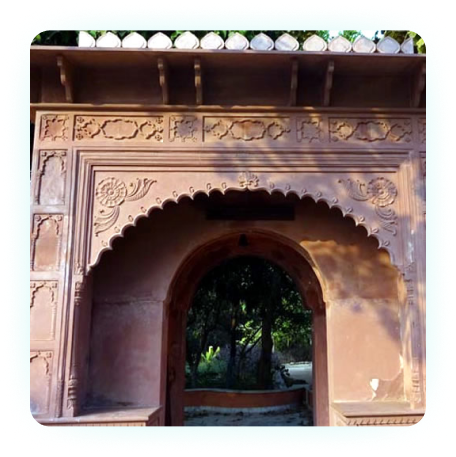
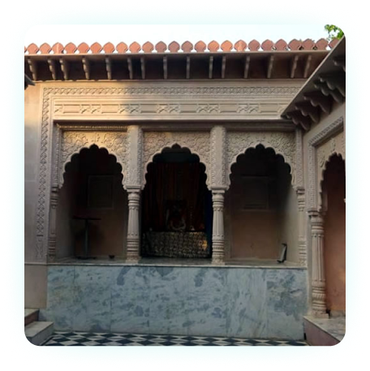
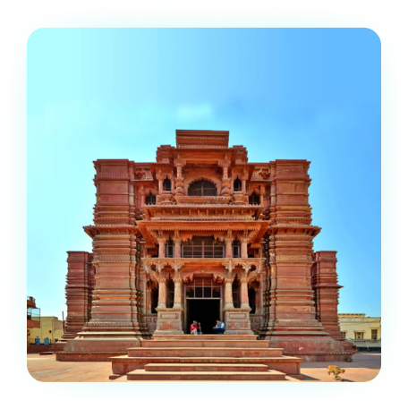
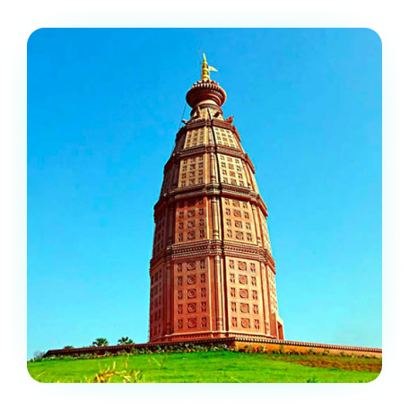

<section class="seven_temples">

  <div class="container">

    <h5 class="temple-heading">7 Temples Of Vrindavan</h5>
    <div class="radha_damodra_temple place_wapper">

      <div class="temple_img">
        
      </div>

      <div class="about_temple">
        <h4>RADHA DAMODAR TEMPLE</h4>
        <p>Shri Radha Damodar Temple was first established by Jiva Goswami in the year 1542 C.E and was located at Seva
          Kunj of Vrindavan. Later, In 1670, when the Muslim emperor Aurangazeb invaded Vrindavana, the original deities
          Radha Damodar were shifted to Jaipur for sometime and when the social conditions became favorable, deities
          were brought back to Vrindavan in the year 1739 C.E. The deities Radha Damodar have been served in Vrindavan
          since then. Before the disappearance of Jiva Goswami in 1596, he left the deities in the care of his successor
          Krishna Dasa, the head priest. Presently, the descendants of Krishna Dasa are serving the deities.</p>
        <p>The temple also houses the Giriraj Shila having the footprints of Krishna which was believed to be given to
          Sanatana Goswami by Krishna himself. According to popular belief, four parikramas (circumambulation) of the
          Radha Damodar Temple is equal to one circumambulation of Govardhana Hill. There are also samadhis of many
          Gaudiya saints including Rupa Goswami Samadhi and Jiva Goswami Samadhi inside the premises of the temple.
          Founder of ISKCON, Srila Prabhpada also stayed in this temple for six years before heading to United States of
          America for preaching about Krishna.</p>
      </div>
    </div>


    <div class="RADHA_GOKULANANDA_TEMPLE place_wapper flex-row-reverse">

      <div class="temple_img">
        
      </div>

      <div class="about_temple">
        <h4>RADHA GOKULANANDA TEMPLE</h4>
        <p> In this temple there is the small Radha-Vinoda Deities of Lokanatha Gosvami, the larger Deities of Vijaya
          Govinda of Baladeva Vidyabhusana, and the Radha Gokulananda Deities of Viswanath Cakravarti. The small Deity
          of Krishna in front of Gokulananda and the Deity of Caitanya Mahaprabhu were worshiped by Narottama Dasa
          Thakur. Viswanath Cakravarti arranged to have this temple built. Formerly, all the Deities in this temple were
          worshiped alone, in their own temples.</p>
        <p> Originally, Viswanath Cakravarti worshiped the Deity of Gokulananda at Radha Kunda. He then moved to
          Vrindavana and stayed with Lokanatha Gosvami. Where this temple is located is where Lokanatha Gosvami would do
          his bhajana. When the original temple of Radha-Vinoda fell apart, Viswanath Cakravarti had another temple
          built and called it the Gokulananda Temple. Both his Deity of Gokulananda and Radha-Vinoda were worshiped
          here.</p>
        <p>It is in between the Kesi Ghat and the Radha-Raman Temple
          There is a Govardhana-shila in this temple that was given by Lord Chaitanya to Raghunath Dasa Gosvami. This
          shila bears the thumb print of Lord Caitanya. He used to chant while holding the shila, pressing it to His
          heart or eyes. The shila was always moist with Lord Caitanya’s tears. He would place it on His head or smell
          it. Lord Chaitanya kept this shila for three years and then gave it to Raghunatha dasa. This shila can be seen
          if you give a small donation. Krishna Priya Thakurani, the daughter of Ganganarayan Chakravarti (the disciple
          of Narottama dasa), got the service of worshiping Giridhara, the Govardhana shila of Raghunatha dasa Gosvami.
        </p>
      </div>
    </div>


    <div class="RADHA_GOPINATH_TEMPLE place_wapper">

      <div class="temple_img">
        
      </div>

      <div class="about_temple">
        <h4>RADHA GOPINATH TEMPLE</h4>
        <p>This temple is on the banks of Radhakunda near Mother Jahnav’s sitting place. These Radha-Gopinatha deities
          were installed after jahnava-devi had received darshan of Gopinatha standing under a tamal tree on the bank of
          Radha-Kunda.</p>
        <p>The deity of Lord Gopinatha was originally established by Vajranabha Maharaja at Vamsi Vata five thousand
          years earlier. Then during the period of the Six Goswamis the deity of Lord Gopinatha was rediscovered at
          Vamsi Vata lying buried in the ground near the famous banyan tree. Madhu Pandita Goswami came to Vrindavana
          and was searching everywhere for the deity of Lord Gopinatha.</p>
        <p>Not finding the deity anywhere, and feeling great sorrow, Madhu Pandita gave up eating food and sat at Vamsi
          Vata while shedding a constant stream of tears. As it was the monsoon season there was a great flood in
          Vrindavana and the River Yamuna overflowed her banks. The force of the flood waters apparently swept away the
          old banyan tree that stood at Vamsi Vata and when the flood waters receded, the deity was seen halfburied in
          the ground by Madhu Pandita’s close friend and companion named Paramananda Bhattacharya, just beneath where
          the old banyan tree had once stood.</p>
        <p>Paramananda immediately called his friend Madhu Pandita who retrieved the deity. The deity was then moved to
          the spot where the present Gopinatha temple now stands.</p>
      </div>
    </div>


    <div class="RADHA_GOKULANANDA_TEMPLE place_wapper flex-row-reverse">

      <div class="temple_img">
        
      </div>

      <div class="about_temple">
        <h4>RADHA SHYAMSUNDAR TEMPLE</h4>
        <p>The temple of Radha Shyamasundara is one of the ‘Seven Goswami Temples’ of Vrindavana and was established by
          Shyamananda Pandita Goswami during the course of his second visit to Vrindavana.</p>
        <p>AAlthough he was not one of the Six Go swamis of Vrindavana, he is counted amongst the famous Gaudiya
          Goswamis who were important followers of Lord Chaitanya Mahaprabhu. Like Radha Damodar, the exterior of Radha
          Shyamsundar Temple is very modest. The courtyard is a bit larger than Radha Damodar’s, and instead of three
          arches, the altar nija-nikata-nivasam dehi govardhana tvam 61 has five. Tulasi grows in the courtyard and the
          samadhi of Shyamananda Prabhu is nearby.</p>
        <p>Most of his disciples were from Jagannatha Puri, Orissa, evident by the plaques in Oriyan script bearing the
          names of temple donors.(Ref VD) Çré Baladeva Vidyäbhushan up on establishing Gaudiya Vaishnavism as a
          sampradaya in its own right was awarded the stewardship of Radha-Syamasundara’s temple, a service that he
          performed up to his last breath.</p>

      </div>
    </div>

    <div class="Radha-Raman-Temple place_wapper">

      <div class="temple_img">
        
      </div>

      <div class="about_temple">
        <h4>RADHA RAMAN TEMPLE</h4>
        <p><strong>Significance of worshiping Shalagrama-shila:</strong>This is one of the ‘Seven Goswarni Temples’ and
          was established by Gopala Bhatta Goswami, one of the famous Six Goswamis of Vrindavana. The deity of
          Radharamana suddenly self-manifested one day from a shalagrama-shila just for the pleasure of Gopala Bhatta.
          All shalagrama-shilas are considered to be a natural manifestation of Lord Vishnu and are therefore
          immediately worshipable and do not need to be installed.</p>
        <p>This is one of the ‘Seven Goswarni Temples’ and was established by Gopala Bhatta Goswami, one of the famous
          Six Goswamis of Vrindavana. The deity of Radharamana suddenly self-manifested one day from a shalagrama-shila
          just for the pleasure of Gopala Bhatta. All shalagrama-shilas are considered to be a natural manifestation of
          Lord Vishnu and are therefore immediately worshipable and do not need to be installed.</p>
        <p><strong>Temple construction:</strong>Radha Ramana is only a short walk, on route to Kesi Ghat. We enter the
          temple compound through an archway leading in from the street. The new temple building for Radha Ramana was
          completed in 1826 by Shah Kundan Lal, the same architect who built Shahji Temple.</p>
        <p><strong>Temple Architecture:</strong>Two-story buildings enclose the first courtyard, shutting out direct
          sunlight. We enter a second courtyard and behold the Radha Ramana Temple wedged in between a couple of
          buildings. The facade is built of light brown sandstone, and the main archway is decorated with spiraling
          lotus designs.</p>
      </div>
    </div>

    <div class="RADHA_GOVINDADEVA_TEMPLE place_wapper flex-row-reverse">

      <div class="temple_img">
        
      </div>

      <div class="about_temple">
        <h4>RADHA GOVINDADEVA TEMPLE</h4>
        <p>Sri-Sri Radha Govinda at Yoga-pitha are the main Deities of the Gaudiya Vaisnava Sampradaya, because they
          accept the devotee’s service and inspire ever-increasing surrender and loving devotion. Yoga-pitha means the
          meeting place or the place where a devotee can connect with Krishna and His eternal associates. The means of
          connection is surrendered devotional service for the pleasure of Lord Govinda, as most perfectly exemplified
          in the selfless actions of Srimati Radharani and the gopis.
          While reading the following description of the beauty of Radha-Govinda’s Yoga-pitha, one should not forget the
          goal of completely dedicating himself to the loving service of the lotus feet of Sri Guru, Sri Gauranga and
          Sri-Sri Radha-Govinda. Actually, the Yoga-pitha means service; for the service attitude permeates everything
          there. The ground, the trees, the flowers, the vines, the fruits, the deer, the birds, the jewel-cottages, the
          wind, the Yamuna, the manjaris, the gopis and Sri Radhika everything and everyone within the Yoga-pitha exists
          only for the service and pleasure of Sri Govinda.</p>

      </div>
    </div>


    <div class="RADHA_MADANMOHAN_TEMPLE place_wapper">

      <div class="temple_img">
        
      </div>

      <div class="about_temple">
        <h4>RADHA RAMAN TEMPLE</h4>
        <p>Madanmohan means Krishna who is so indescribably beautiful that He even attracts Cupid, Kamadeva. Sanatana
          Goswami is the sambandha acarya who gives us knowledge of our proper relationship with Krishna, And his Deity,
          Madanmohan and helps us overcome our attraction for material sense gratification (Cupid) and fix our minds on
          devotional service.</p>
      </div>
    </div>

  </div>

</section>